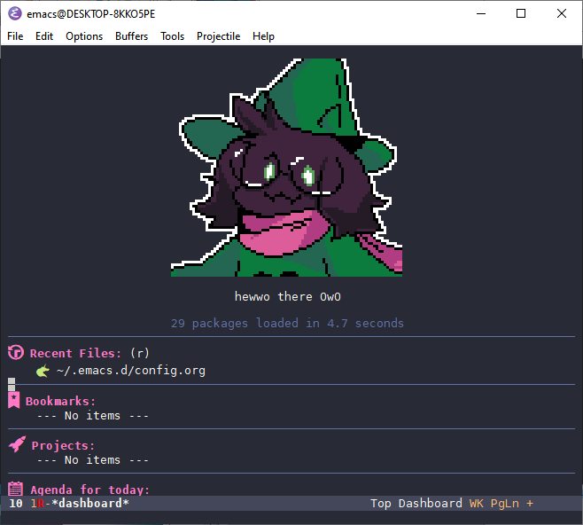

Emacs Configuration
Table of Contents
1 Summary
Welcome to answer's special Emacs configuration! I will customize this however I see fit to my advantage in the future. However, it is now a great step that I have made the move over to a configuration written within org-mode so that it is more organized.

2 Packages
2.1 Repositories
(require 'package) (setq package-enable-at-startup nil) (setq package-archives '(("ELPA" . "http://tromey.com/elpa/") ("gnu" . "http://elpa.gnu.org/packages/") ("melpa" . "https://melpa.org/packages/") ("org" . "https://orgmode.org/elpa/"))) (package-initialize)
2.2 use-package
2.2.1 Installation
(unless (package-installed-p 'use-package) (package-refresh-contents) (package-install 'use-package))
2.2.2 Enable ensuring of all packages listed to be automatically installed
Since repeating :ensure t is tiring, let's make doing that redundant.
(require 'use-package-ensure) (setq use-package-always-ensure t)
2.2.3 Automatically update packages
(use-package auto-package-update :config (setq auto-package-update-delete-old-versions t) (setq auto-package-update-hide-results t) (auto-package-update-maybe))
3 External Software Support
3.1 Windows
3.1.1 GPG
This allows us to have encrypted files in Emacs for things like schedules and other personal private data that somebody might want to look at.
(require 'epa-file) (custom-set-variables '(epg-gpg-program "C:/Program Files (x86)/gnupg/bin/gpg.exe")) (epa-file-enable)
4 Visual
4.1 Remove clutter from screen
(scroll-bar-mode -1) (tool-bar-mode -1) (menu-bar-mode -1)
4.1.1 Remove annoying noises from doing anything out of line
I know this doesn't count as visual, but I really don't feel like making a seperate category for this one thing.
(setq ring-bell-function 'ignore)
4.2 Font
DejaVu Sans Mono is a pretty reliable font that works for almost any situation comfortably.
(add-to-list 'default-frame-alist '(font . "DejaVu Sans Mono-10")) (set-face-attribute 'default t :font "DejaVu Sans Mono-10") (set-face-attribute 'default nil :font "DejaVu Sans Mono-10") (set-frame-font "DejaVu Sans Mono-10" nil t)
4.3 Theme
(use-package dracula-theme :config (load-theme 'dracula t))
4.4 all-the-icons
(use-package all-the-icons)
4.5 Line numbers
- Note taken on
This has been disabled since the line numbers take up a lot of space on the screen which the job of knowing which line number I'm on is solved by the modeline.
This enables line numbers in all programming related modes.
;; (add-hook 'prog-mode-hook 'display-line-numbers-mode)
4.6 Highlight current line in programming modes
The reason why we only do this when we have a window system is that highlight line mode can be a little broken without one.
(when window-system (add-hook 'prog-mode-hook 'hl-line-mode))
4.7 Rainbow Delimiters
(use-package rainbow-delimiters :ensure t :config (add-hook 'prog-mode-hook 'rainbow-delimiters-mode))
4.8 Beacon
(use-package beacon :config (beacon-mode 1))
4.9 Modeline
(use-package smart-mode-line :config (setq sml/theme 'respectful) (sml/setup))
5 Projectile
(use-package projectile :diminish projectile-mode :config (projectile-mode +1) (define-key projectile-mode-map (kbd "C-c p") 'projectile-command-map))
6 Dashboard
6.1 Page break lines
Needed to insert break lines so that ^L isn't displayed instead.
(use-package page-break-lines)
6.2 Dashboard setup
(use-package dashboard :ensure t :init :config (dashboard-setup-startup-hook) (setq dashboard-items '((recents . 5) (bookmarks . 5) (projects . 5) (agenda . 5))) (setq dashboard-set-heading-icons t) (setq dashboard-set-file-icons t) (setq dashboard-startup-banner "~/.emacs.d/ralsei.png") (setq dashboard-set-footer nil) (setq dashboard-banner-logo-title "hewwo there OwO") (setq initial-buffer-choice (lambda () (get-buffer "*dashboard*"))))
7 Autocomplete
(use-package auto-complete :diminish :config (ac-config-default))
8 Powerthesaurus
Thesaurus integration for Emacs.
(use-package powerthesaurus)
9 NeoTree
(use-package neotree :config (setq neo-theme (if (display-graphic-p) 'icons 'arrow)) :bind ("C-c C-x TAB" . neotree-toggle))
10 IDO
(require 'ido) (ido-mode t)
10.1 IDO vertical mode
(use-package ido-vertical-mode :config (ido-vertical-mode 1) (setq ido-vertical-define-keys 'C-n-and-C-p-only))
11 popup-kill-ring
(use-package popup-kill-ring :bind ("M-y" . popup-kill-ring))
12 which-key
When we start a key macro, this helps gives us suggestions for what we can do in case we forgot what we were going to do.
(use-package which-key :diminish which-key-mode :config (which-key-mode))
13 Org
13.1 HTML-ize
Allow for the exporting of org-mode files in HTML in Windows.
(use-package htmlize :ensure t)
13.2 indent-mode
(setq org-startup-indent t)
13.3 Line wrapping
(add-hook 'org-mode-hook '(lambda () (visual-line-mode 1)))
13.4 org-reveal
(use-package ox-reveal)
14 Translation
(use-package google-translate :ensure t :config (global-set-key "\C-ct" 'google-translate-smooth-translate) (global-set-key "\C-cT" '(google-translate-at-point "English" "French")))
15 Fireplace
(use-package fireplace)